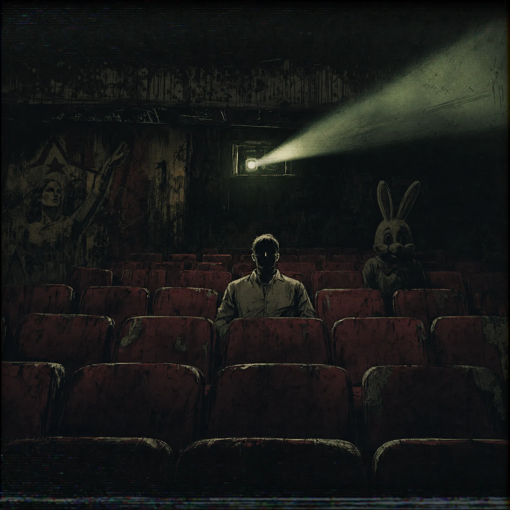
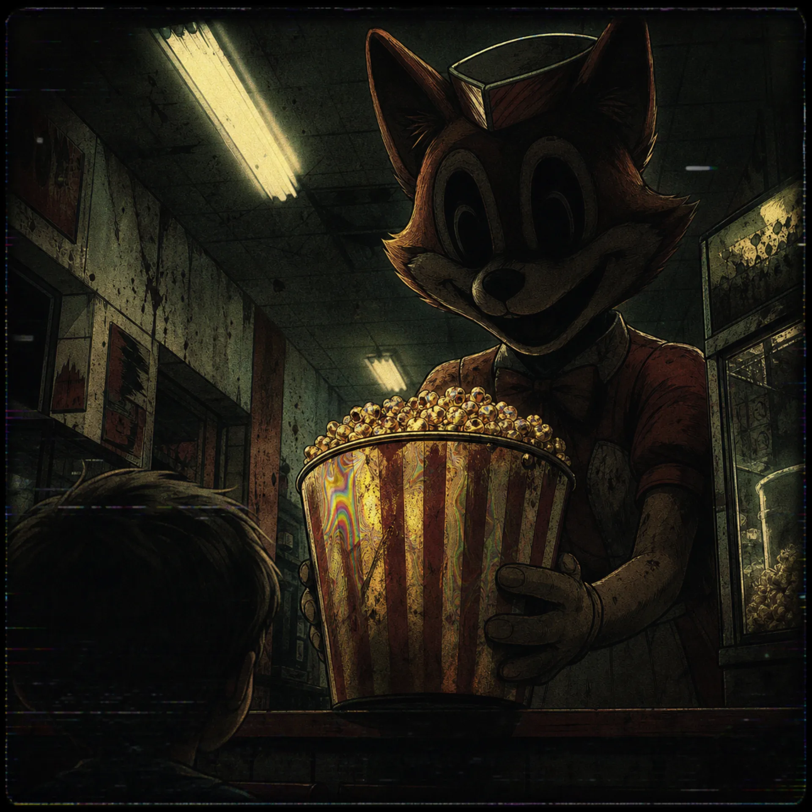
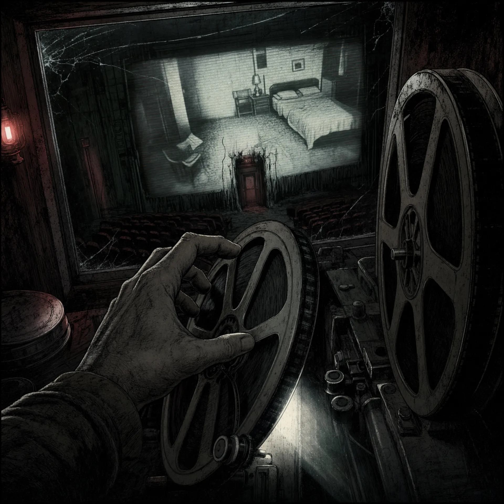

Фаза 1 (Тактильный стресс)
Подсадить к объекту Аниматора «Кролик». Контакт запрещен. Напоминаем: у Кролика ампутирован язык в связи с прошлыми нарушениями дисциплины, поэтому он не нарушит тишину в зале. Его задача — просто тяжело дышать рядом.
Этот адрес зарезервирован для персонала. Вернитесь к гостевой странице кинотеатра.
Открыть «Иллюзион»Кинотеатр используется для финальной стадии дезориентации сырья. Сенсорная депривация в темноте и фокус на светящемся экране делают объекты максимально уязвимыми для внушения.



Подсадить к объекту Аниматора «Кролик». Контакт запрещен. Напоминаем: у Кролика ампутирован язык в связи с прошлыми нарушениями дисциплины, поэтому он не нарушит тишину в зале. Его задача — просто тяжело дышать рядом.
Официантка «Лиса» обязана доставить объекту ведро попкорна. Внимание: масло фабрики «Детский Жир» еще не прошло клинические испытания. Внимательно фиксируйте степень тошноты и галлюцинаций у зрителя. Если его начнет рвать — не убирайте, это часть процесса.
Ровно на середине сеанса киномеханик должен переключить пленку на прямой эфир из спальни объекта. Если Главврач уже занял позицию у кровати зрителя и гладит его подушку — сфокусируйте линзу проектора.
Когда психика объекта будет сломлена, дверь на выход заблокируется. Предложите ему пройти прямо в экран. Нам всегда нужны новые звезды для следующих сеансов.
Игнорируйте стук изнутри экрана. Просто сделайте звук в зале погромче.